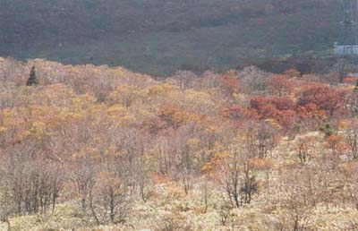

東山魁夷の世界？
笹谷峠への入り口に車を止めて登りだす。スギ林を抜けるとケヤキ、コナラ、ブナの林にはいる。
さざ波の様な木漏れ日、雲から出てきた日差しが赤色、黄色の木の葉を明るく輝かせる。厚い腐葉
土の積もる落ち葉をサクサク踏み込んで進む。鳥の声もなく、サラサラと葉音が聞こえる。笹谷峠
に出ると視界は広がりクマ笹に被われた稜線となる。ナナカマドの赤い実だけが裸の木にたわわに
着いていた。道端には紫色のカワラナデシコが咲いていた。
宮城県 笹谷

|
|
||||
|
 |
||||